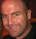

Mike Williams Co-inventor of Erlang |  Jim Zemlin Executive Director at The Linux Foundation |  James Aimonetti VoIP Erlangineer |  Jesper Louis Andersen Creator of the eTorrent project |  Karl Anderson Chief Erlang Architect and CTO at 2600hz |
 Michael Bakkemo Principle Data Scientist @ Loggly |  Pavlo Baron Author and Erlang Player |  Fernando Benavides Erlang Lead developer at Inaka Labs |  Joseph Blomstedt Distributed Systems Enthusiast and Platform Engineer @ Basho |  Brett Cameron Senior architect with Hewlett Packard's corporate Cloud Services group |
 Geoff Cant Senior Engineer on Heroku's Routing Team |  Richard Carlsson Father of eunit, edoc and try-catch |  Francesco Cesarini Founder of Erlang Solutions and co-author of Erlang Programming |  Benoît Chesneau Web Craftsman |  Chad DePue Entrepreneur and creator of ErlangInside.com |
 Seth Falcon Development Lead at Opscode |  Jared Flatow Senior Engineer @ Nokia Research Center, Disco Project |  Jonathan Freedman Lover of (almost) all things OTP and co-organizer of Bay Area Erlounge |  Blake Gentry Senior Engineer on Heroku's Routing Team |  Noah Gift Co-author of "Python For Unix and Linux System Administration" |
 Horacio González-Vélez Innovation-driven Parallel Computing Scientist with a Marketing Twist |  Andy Gross Riak Core Developer, Principal Architect at Basho Technologies |  Fred Hebert Write You Some Erlang for Great Good! |  Loïc Hoguin Erlang Cowboy and Nine Nines Founder |  John Hughes Inventor of QuickCheck and Erlanger of the year |
 Kasper Hulthin Co-founder of Podio |  Matt Ingenthron Couchbase co-founder, Membase committer |  Paul Jones Founder at 23wide, lead developer at LShift |  Maxim Kharchenko CTO, Barque Groupe d'Energie |  Magnus Klaar Erlang Developer at Nine Nines |
 Adam Kocoloski Founder & CTO of Cloudant, CouchDB Expert |  Lukas Larsson JIT Problem solver |  Jeff Ma Co-Founder of Protrade and Citizen Sports | Charles McKnight |  Jack Moffitt Lead Architect at TalkTo |
 Cliff Moon Dynomite creator and committer |  Jeff Moriarty Vice President, Digital Products, The Boston Globe |  Paolo Negri Opensource enthusiast, developer at wooga |  Jay Nelson Driving dynamic data in a YAWS Monster Truck |  Jesse Newland Ops Engineer at GitHub |
 Patrik Nyblom Erlang VM developer and OTP team member |  Mahesh Paolini-Subramanya Creator of the first Erlang Cloud PBX |  Manolis Papadakis Designer and implementor of the core PropEr system |  Mark Phillips Community Manager at Basho Technologies |  Michal Ptaszek ejabberd employer and deployer |
 Yurii Rashkovskii Spawnfest Organiser |  Rick Reed Software engineer at WhatsApp |  Oliver (OJ) Reeves Director - Functional IO | Dan Reverri Developer Advocate, Basho Technologies |  Mazdak Rezvani Chief Technology Officer at Chango |
 Kenji Rikitake Network Security Professional and Erlang/OTP Enthusiast |  Kostis Sagonas Leader of the HiPE team and Erlang tool developer |  Dustin Sallings Co-founder of Couchbase |  Darren Schreiber Co-Founder of 2600hz |  Andreas Schultz FlowER designer |
 Gene Sher Neuroevolution Through Erlang |  Ram C Singh CEO of Afiniate. Thinker Schemer Solver Guy |  Tristan Sloughter |  Roger J Smith CEO/Founder, Solevo LLC; VP - Mobility, NCS Technologies |  Kevin Smith Pragmatic Podcast Narrator |
 Garrett Smith CloudBees hacker with Erlang powered X-ray vision |  Dave Smith YAED. Author of rebar and bitcask | Viktor Sovietov CEO at Massive Solutions |  Tim Spurway Architect at Chango |  Erik Stenman Chief Scientist of Klarna |
 Pero Subasic Chief Architect of R&D at AOL |  Patrick Sullivan Co-Founder of 2600hz |  Simon Thompson Creator of Wrangler and co-author of Erlang Programming |  Phil Toland Erlang Developer at Rackspace Hosting |  Ville Tuulos Co-Founder of Bitdeli and Initiator of the Disco project |
 Steve Vinoski Yaws committer, REST advocate, and distributed systems expert |  Robert Virding Co-inventor of Erlang, Principal Language Expert @ Erlang Solutions |  Christian Westbrook Pro Bono Erlanguatan / Reiki Practitioner Holistic Healing Center of San Francisco |  Ulf Wiger Feuerlabs co-founder and Developer Advocate |  Monica Wilkinson Open Web Standards and Data Portability Advocate |
 Joe Williams Ops and Erlang |  Ken Wilson Systems Architect ADTECH - AOL Advertising group |  Holger Winkelmann Telecoms and AAA Expert |